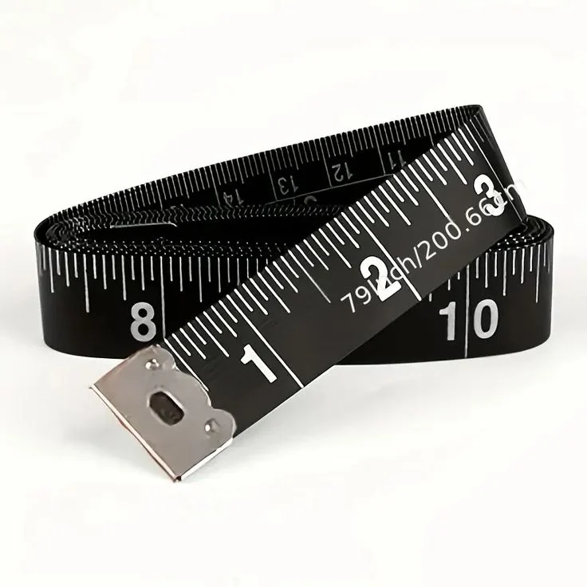
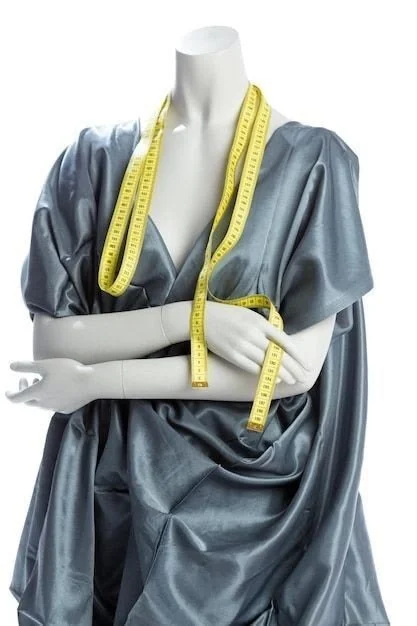

Tubo's Stich
Clothes cut for one body, sewn for one life. Every garment begins with a single thread — follow it.
We don't make clothes for a size. We make them for a person — the slope of a shoulder, the way you stand when nobody is watching, the arm you reach with first. One thread, followed with patience, until it fits like it was always yours.
Twenty-seven measurements. Then we take them again.
A tape measure is the most honest tool in the atelier. We read it slowly, write everything down, and trust nothing we haven't checked twice. Your posture, your habits, the watch on your left wrist — it all goes into the pattern.
- Chest0cm
- Waist0cm
- Shoulder0cm
- Sleeve0cm
- Back length0cm
- Inseam0cm

Choose the cloth that chooses you.
Run your cursor across the drape. Every bolt in the atelier is picked for how it moves, how it breathes, and how it will age with you.
- Cloth
- Midnight Wool
- Weight
- 260 g/m²
- Weave
- Twill, Super 120s
- Best for
- Suits · Overcoats
Listen with your hands.
Before the first cut we read the cloth by touch — its grain, its weight, its stubborn edges.
Shears that only touch cloth.
One pair, sharpened by hand, never used for paper. The line is chalked once and cut once.
Pin by pin, a shape appears.
The pattern is pinned to the cloth and then to you — adjusted on the body, not on paper.
Thread, chosen like a word.
Matched to the cloth in daylight. Strong enough to hold, quiet enough to disappear.
Tension, set by ear.
Every machine has a voice. When the tension is right, it hums instead of chatters.
Then — stitch.
Twelve to the inch on the seams, by hand on the lapels and buttonholes. Slow on purpose.
Pick the thread that runs through your story.
Hover a colour to try it on. Click to keep it — your thread will follow you to the end of the story.
- BrassNo. 01
- VermilionNo. 07
- SaffronNo. 12
- BlushNo. 19
- Powder BlueNo. 23
- UltramarineNo. 31
- ClayNo. 38
- Bottle GreenNo. 44
Fitted on you, not on a size.

-
01
8–10 wks
Bespoke
Your own pattern, drafted from scratch. Three fittings, built entirely around you.
-
02
4–6 wks
Made to measure
A refined house block adjusted to your measurements and your choice of cloth.
-
03
6–12 wks
Bridal & occasion
Gowns, suits and traditional wear for the days you'll look back on. Fitted down to the hour.
-
04
3–10 days
Alterations & repair
Give the clothes you love a second life. Re-cut, re-lined, re-stitched.
The process
- Consult
- Measure
- Baste fitting
- Final fitting
- Collect
Sewn with love — knotted by hand
Let's make something that fits.
Tell us a little about what you have in mind. We'll reply within two working days to arrange your first consultation — in the atelier or at your door.